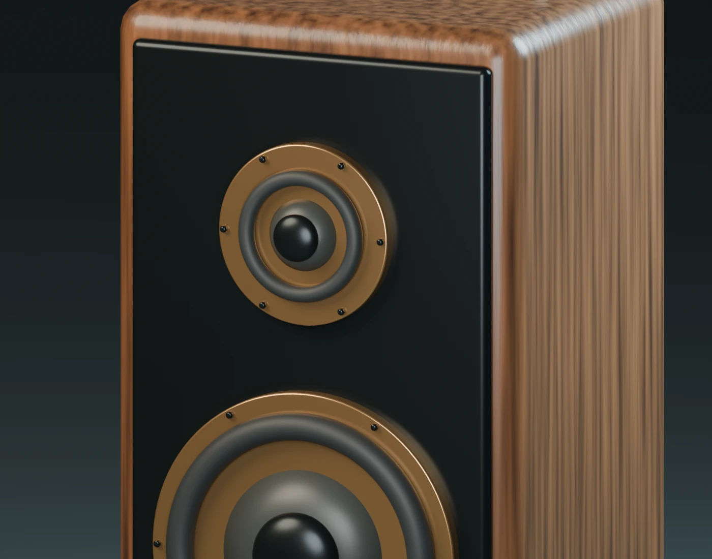
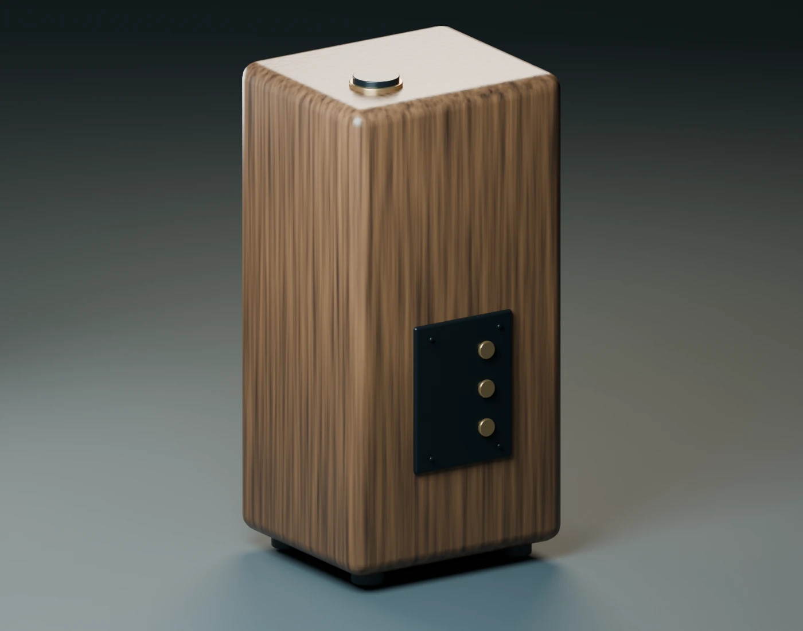
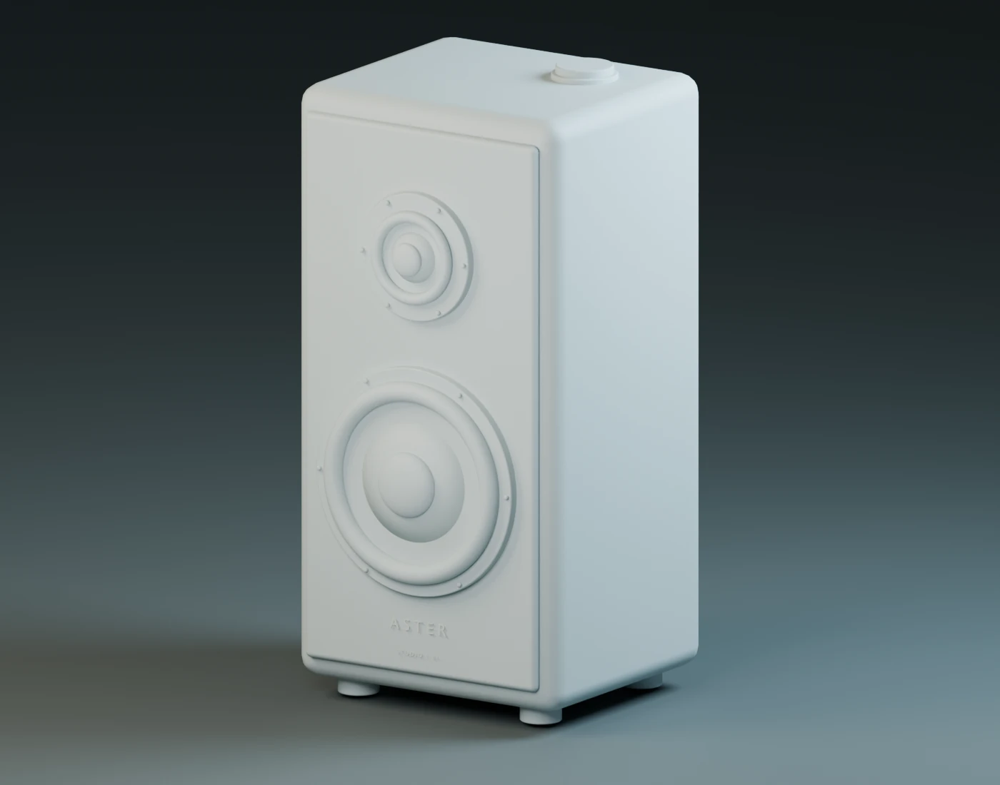

Aster Studio
Speaker.
A compact speaker study in smoked walnut, charcoal and champagne metal. Made as a portfolio demonstration with AI-assisted Blender scripting.

From concept to scene.
The scene contains modeled cabinet panels, driver rings, tapered diaphragms, suspension surrounds, fasteners, isolation feet and a top control. Procedural shading supplies the wood grain; area lights define the form. These images are renders of a saved 3D scene.
The process starts with AI-assisted scripting and continues through visual inspection and revision. Blender 5.1 and Cycles were used for the final images. No external image assets were used.
This is an original study, not a client commission or a manufactured product. It demonstrates scene construction and rendering; it is not an engineering specification, a tested acoustic design or evidence of game-ready topology.



Source and deliverables.
The editable Blender scene, generation script and full-resolution PNGs are retained with the project. Source files can be discussed when agreeing a brief.
Discuss a 3D project ↗